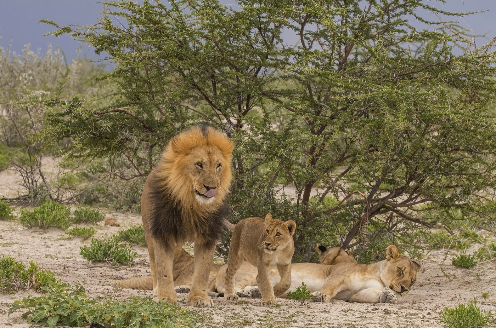

새로 온 수컷 사자는 왜 새끼를 죽일까? — 2년이라는 시간으로 푸는 동물의 계산
"동물은 종을 지키려고 그렇게 하는 거예요."
자연 다큐멘터리에서 이 말만큼 자주 들리는 문장도 드뭅니다. 연어가 물살을 거슬러 오를 때도, 펭귄이 눈보라 속에서 알을 품을 때도, 화면 밖 목소리는 '종의 보존'을 말합니다. 듣기에는 편한 말입니다. 자연이 큰 뜻 아래 질서 있게 돌아간다는 느낌을 주니까요.
그런데 이 말이 한 장면 앞에서 갑자기 막힙니다. 떠돌던 젊은 수컷 둘이 무리의 늙은 수컷들을 몰아내고 새 주인이 됩니다. 무리에는 아직 젖을 먹는 새끼들이 있습니다. 새 수컷들은 그 새끼들을 하나씩 물어 죽입니다.

그리고 결정적으로 — 종을 지키려는 동물이라면, 자기 종의 새끼를 죽일 이유가 없습니다.
이 글은 그 장면 앞에서 말문이 막혔던 분들을 위해 씁니다. 결론부터 말씀드리면, 사자는 종을 위해 살지 않습니다. 한 마리 한 마리가 짧게 주어진 시간 안에 자기 새끼를 남기는 장부를 맞추며 삽니다. 새 수컷의 영아살해는 잔혹함이 아니라 그 장부의 분모, 곧 왕좌를 지킬 수 있는 시간이 2년 남짓이라는 숫자가 낳은 나눗셈의 답입니다. 생물학은 이것을 성선택적 영아살해(Sexually Selected Infanticide)라고 부릅니다.
'종을 위해서'와는 뭐가 다른가
그러니 질문을 바꿔야 합니다. "이 행동이 종에게 이로운가"가 아니라 "이 행동을 한 개체가 자기 새끼를 더 많이 남기는가"입니다.
이 전환은 1960년대에 실제로 일어난 논쟁이었습니다. 생태학자 윈-에드워즈(Wynne-Edwards)는 동물의 많은 사회 행동을 무리 전체의 개체 수를 조절하는 장치로 읽었습니다. 진화생물학자 조지 윌리엄스(George C. Williams)는 1966년 책 『적응과 자연선택(Adaptation and Natural Selection)』에서 이 읽기를 정면으로 비판했습니다. 무리 단위의 이득을 위한 형질이 생기려면 무리끼리의 선택이 필요한데, 무리 안에서 개체끼리 벌이는 선택이 대개 그것을 무너뜨린다는 것입니다. 그래서 두 설명이 다 그럴듯할 때는 개체 수준의 설명을 먼저 세우라고 권했습니다[1].
비유로 하면 이렇습니다. 앞의 설명은 종 전체가 금고 하나를 같이 쓴다고 봅니다. 뒤의 설명은 한 마리마다 제 이름으로 된 통장이 있다고 봅니다. 공동 금고라면 남의 새끼를 죽이는 것은 금고를 털어 내는 일이지만, 각자의 통장이라면 사정이 달라집니다. 다만 비유는 비유일 뿐이니, 이제 사자의 실제 숫자로 돌아가겠습니다.
사자의 2년 — 숫자를 겹치면 산수가 보인다
사자 수컷은 둘 이상이 연합을 이뤄 무리를 차지합니다. 이 연합이 한 무리를 다스리는 기간은 길지 않습니다. 둘로 이뤄진 연합은 대개 2년 반을 넘기지 못하고, 셋이나 넷이 되어야 3년을 넘깁니다. 무리를 차지한 수컷에게는 더 젊고 센 연합에게 밀려나기까지 대략 2년이 주어지는 셈입니다[2].
이제 새끼 쪽 시계를 겹쳐 보겠습니다. 사자 새끼는 3.5개월의 임신 끝에 한 배에 하나에서 여섯 마리, 평균 세 마리가 태어납니다. 젖은 7~10개월에 떼지만, 적어도 16개월이 될 때까지는 무리의 어른들에게 기대어 삽니다. 그래서 어미가 다음 새끼를 낳기까지는 20~30개월이 걸립니다[2].
두 시계를 나란히 놓으면 새 수컷의 처지가 보입니다. 갓 태어난 새끼들이 있는 무리를 차지했다고 해 볼게요. 그 새끼들을 살려 두면 어미는 20~30개월 뒤에야 다음 새끼를 낳습니다. 그때면 수컷의 2년은 거의 끝나 있고, 자기 새끼가 혼자 설 때까지 지켜 줄 시간은 남지 않습니다. 반대로 새끼를 잃은 어미는 2~3주 만에 다시 발정합니다[2]. 새끼를 죽이면 시계가 처음으로 돌아가는 것입니다.
암컷도 제 장부를 맞춘다
이 계산이 수컷에게만 있는 것은 아닙니다. 야생 사자 무리를 관찰한 패커(Craig Packer)와 퓨지(Anne Pusey)는 1983년 논문에서 암컷 쪽의 대응을 정리했습니다. 새끼가 있는 암컷은 새끼를 지키려 맞서거나, 아예 새 수컷을 피해 다닙니다. 그래도 수컷이 바뀌면 새끼가 많이 죽습니다[3].
흥미로운 대목은 그다음입니다. 무리에 남아 새 수컷과 짝짓는 암컷은 처음 몇 달 동안 임신이 잘 되지 않습니다. 그러면서도 짝짓기를 더 자주, 먼저 청하고, 상대도 여럿을 찾습니다. 연구진은 이것이 경쟁하는 수컷 연합들을 끌어들여 결국 큰 연합이 무리에 남게 만드는 효과를 낸다고 봤습니다. 암컷이 새끼를 끝까지 키우려면 2년 넘게 수컷들의 괴롭힘에서 보호받아야 하는데, 그만큼 오래 머무는 것은 큰 연합뿐이기 때문입니다[3].
짧게 말하면, 암컷은 다음 새끼의 아버지가 오래 버틸 수컷이 되도록 시간을 법니다. 수컷은 임기를, 암컷은 새끼가 클 시간을 셈합니다. 두 장부가 같은 2년을 놓고 맞물립니다.
같은 식에 다른 수명을 넣으면 — 와이즈덤의 68년
이 회계가 정말 '사자는 잔인하다'는 이야기가 아니라 '시간이 짧다'는 이야기라면, 시간이 아주 긴 동물은 정반대로 살아야 합니다. 그런 동물이 실제로 있습니다. 바다 위를 날며 일생 대부분을 보내는 큰 바닷새, 신천옹(albatross)입니다.
북태평양 미드웨이 환초에 사는 레이산신천옹 한 마리는 '와이즈덤(Wisdom)'이라는 이름으로 불립니다. 연구자들이 1956년 처음 다리에 식별 고리를 채울 때 와이즈덤은 이미 알을 낳고 있었습니다. 이 새는 다섯 살 전에는 번식하지 않으니, 그때 이미 다섯 살은 넘었다는 뜻입니다[4]. 그리고 2024년 말, 일흔네 살쯤 된 와이즈덤이 새 짝과 함께 4년 만에 다시 알을 낳았습니다. 미국 어류·야생동물관리국은 와이즈덤이 평생 알 50~60개를 낳고 새끼를 30마리까지 날려 보냈을 것으로 봅니다[5].
신천옹의 번식은 사자 수컷의 셈으로 보면 파산입니다. 레이산신천옹 암컷은 한 번에 알을 하나만 낳고, 암수가 번갈아 품고 키우며 일곱 달쯤을 한 새끼에게 씁니다. 한두 해 번식을 건너뛰는 일도 드물지 않고, 짝은 대개 평생 함께합니다[5]. 날개가 가장 긴 새인 나그네신천옹은 알 하나를 78일 동안 암수가 번갈아 품습니다[6].
그런데도 이 전략이 성립하는 까닭은 분모에 있습니다. 와이즈덤의 장부는 2년이 아니라 수십 년 단위로 셈합니다. 한 해에 알 하나에 모든 것을 걸어도, 그 새끼를 잃어도, 다음 해와 그다음 해가 남아 있습니다. 임기가 길면 한 번에 크게 걸어도 되찾을 기회가 남습니다.
사자와 신천옹은 정반대로 행동하지만 서로 어긋나지 않습니다. 같은 식에 서로 다른 수명을 넣은 두 개의 답일 뿐입니다. 그리고 바로 이 대비가 '종의 보존'이라는 말을 가장 조용히 무너뜨립니다. 종을 위한 것이라면 두 종이 왜 반대로 살겠습니까.
이 설명은 얼마나 단단한가
이 설명이 처음 나왔을 때부터 받아들여진 것은 아닙니다. 영장류학자 세라 허디(Sarah Blaffer Hrdy)는 1970년대 초 인도 아부산의 하누만랑구르 원숭이를 관찰하다가 같은 현상을 봤습니다. 처음에는 개체가 너무 많아 생긴 이상 행동이라는 가설을 확인하러 갔지만, 곧 그 가설이 틀렸다는 것을 깨달았습니다. 무리의 주인은 평균 27개월마다 바뀌었고, 새끼는 바깥에서 들어온 수컷만 공격했습니다. 젖을 떼지 않은 남의 새끼를 없애면 어미가 젖먹이기를 멈추고 더 빨리 다시 배란한다는 것이 허디의 설명이었습니다[7].
영장류는 개체의 번식 이익이 아니라 무리의 이익을 위해 행동한다는 당시의 확신과 정면으로 어긋났기 때문에, 그녀의 제안은 큰 논란이 되었다.
— 위키백과, 「Sarah Blaffer Hrdy」 (번역)[7]
그 논란의 한복판에 있던 것이 바로 이 글 첫머리의 '종을 위해서'라는 확신이었습니다. 사자 쪽 근거는 야외에서 무리를 직접 따라가며, 수컷이 바뀔 때 새끼와 암컷에게 무슨 일이 일어나는지 기록한 자료에 기대고 있습니다[3].
필자 한마디
그 장면 앞에서 화면을 돌리고 싶어지는 마음은 이상한 게 아닙니다. 우리는 자연에 큰 뜻이 있기를 바라니까요.
"동물은 목적을 품지 않고, 시간을 셈합니다." 사자의 2년과 신천옹의 수십 년을 나란히 놓으면, 잔혹함과 헌신이라는 정반대의 말이 같은 식의 두 답으로 바뀝니다. 그 식을 알고 나면 그 장면이 덜 끔찍해지는 게 아니라, 더 정확하게 보입니다.
다음에 다큐멘터리에서 '종을 위해서'라는 말이 나오면 한 번만 멈춰서 생각해 보세요. 그 동물에게 주어진 시간은 얼마일까요.
정리하자면 이렇습니다. 동물의 행동은 종 전체의 이익이 아니라, 한 개체가 주어진 시간 안에 자기 새끼를 남기는 장부로 더 잘 설명됩니다. 사자 수컷이 무리를 지키는 시간은 2년 남짓이고, 새끼 하나를 혼자 설 때까지 키우는 데도 그만큼이 듭니다. 그 숫자가 영아살해를 낳고, 같은 식에 수십 년을 넣으면 알 하나에 일곱 달을 쏟는 신천옹이 나옵니다.
오늘 동물이 나오는 영상을 보신다면, 그 행동이 누구의 장부에 이익으로 적히는지 한 번 물어보세요.
이 글은 일반적인 정보 제공을 위한 것입니다. 동물 행동의 원리를 설명할 뿐이며, 사람의 행동을 평가하는 근거로 쓰지 않습니다.
참고문헌
- 위키백과. Adaptation and Natural Selection (George C. Williams, 1966의 해설, 백과). 링크 ↩
- Harrington, E. Panthera leo (lion). Animal Diversity Web, University of Michigan, 2004. 링크 ↩
- Packer, C., Pusey, A. E. Adaptations of female lions to infanticide by incoming males. American Naturalist 121(5): 716–728, 1983. 링크 ↩
- U.S. Fish & Wildlife Service. Wisdom, the World's Oldest Known Wild Bird, Returns to Midway Atoll, 2022-12-09. 링크 ↩
- Dasgupta, S. Wisdom the 74-year-old albatross lays an egg with new mate. Mongabay, 2024-12-09 (해설 기사). 링크 ↩
- University of Liverpool. World's longest-winged birds go easy on older partners, 2022 (해설 기사). 링크 ↩
- 위키백과. Sarah Blaffer Hrdy (백과). 링크 ↩